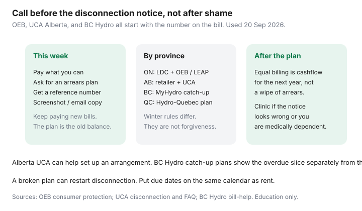

Utilities · Canada
How to Set Up a Utility Payment Arrangement in Canada Before Disconnection Risk Escalates
Shame delays the call until the options narrow. Utilities would rather have a dated plan than a silent account and a truck roll. That is not kindness marketing — reconnect fees and winter rules are expensive for them too. The playbook is the same across provinces: call early, pay something, get it in writing, keep paying the new bills.
This is not a grant application. For Ontario emergency dollars see LEAP. For a spike that might be a leak or an estimate see the dispute ladder.
Key takeaways
- Call the number on the bill as soon as you know a due date will be missed — not after the 48-hour call. Early arrangements exist in Ontario, Alberta, B.C., and Québec; names differ.
- Have income, hardship context, and a number you can actually pay. A plan you will break is how disconnection restarts.
- Equal billing is a forward cashflow tool after the arrears are scheduled. It does not erase the old balance.
- Get a reference number and a written or emailed confirmation. A verbal “you’re fine” is not a file.
- Escalation: Ontario OEB / LEAP, Alberta UCA mediation, BC Hydro catch-up and Customer Crisis Fund, community legal clinics if the notice looks wrong.
Call early: before the disconnection notice stage
The worst time to negotiate is the morning after the final notice. The best time is the week you know rent and hydro will collide. Say, in one breath: you cannot pay the full amount by the due date, you can pay $X on date Y, and you want an arrears arrangement. Pay that $X the same day if you can — a good-faith debit is a file note.
Ontario licensed distributors still have to mention LEAP and low-income agreements on a disconnection notice. Do not wait for that script. Alberta retailers send pending-disconnection notices; the UCA says to contact the retailer immediately to pay, arrange, or report a payment already made. BC Hydro will talk catch-up plans and, if you qualify, a payment deferral — late charges can still apply.

What utilities typically need (income, hardship context)
- Account number and the name on the bill (the person who can legally bind the account).
- A number you can pay now and a number per installment. “Whatever you think” is how they set a plan you fail on day 30.
- Hardship context in one sentence: job loss, illness, a true-up, a roommate who left. You are not writing a memoir.
- If you may be low-income, say so and ask for the longer agreement / deposit relief rules that exist in Ontario and for LEAP intake. In Alberta, ask the retailer and then the UCA if you stall.
- Medical dependence on electricity (oxygen, powered mobility, refrigerated medicine): say it. It does not always change the tariff. It should change the urgency of the file.
Equal billing as a forward tool after arrears are planned
Equal or budget billing spreads next year’s use. It does not delete last year’s shortfall. Enrol after the arrears plan is on paper, or you will hide a true-up inside a “flat” debit and fail both. Read equal billing so you still open the usage graph. Enbridge EMPP, FortisBC EPP, and hydro equalized plans are cashflow — the same warning as always.
Keeping written confirmation of any agreement
- Ask for the arrangement in My Account, email, or a letter. Note the agent’s name, date, and reference number while you are on the phone.
- Screenshot the plan: installment amounts, dates, whether new charges are extra, and what happens if you miss one.
- Put the dates on the same calendar as rent. A broken plan can restart the disconnection clock.
- If the confirmation does not match the call, call back the same week. Silence is how “$80 on the 15th” becomes “paid in full by Friday.”
Provincial differences: OEB, UCA Alberta, BC utilities
| Place | First call | If that stalls |
|---|---|---|
| Ontario | LDC or Enbridge number on the bill; ask for arrears agreement + LEAP agency | OEB consumer path; winter ban 15 Nov–30 Apr for licensed distributors (bills still accrue) |
| Alberta | Your retailer (not only the wires company); payment or arrangement | UCA Mediation and Information Team; AUC winter rules (electricity roughly 15 Oct–15 Apr; gas 1 Nov–14 Apr; also no disconnect below 0°C in the next 24 hours — verify live) |
| British Columbia | BC Hydro MyHydro catch-up plan or 1-800-224-9376; FortisBC if that is your bill | Customer Crisis Fund (BC Hydro page: typically owing under $1,000, grant up to $600 to the account — verify); BCUC if the process failed |
| Québec | Hydro-Québec payment arrangement / instalments in the customer space | Community resources and, if needed, the Régie pathway for a billing dispute — arrangements first |
Alberta winter rules and Ontario’s ban are disconnection pauses. They are not amnesty. BC Hydro’s late charge (the page used here listed 1.5% per month on unpaid amounts of $30 or more) keeps running while you talk. Pay something on the record.
When to seek community legal clinic or consumer advocate help
Go to a clinic or advocate when the notice looks wrong, you are medically dependent, a unit sub-meter provider is threatening a winter cut-off that a licensed LDC could not, or the utility will not put an arrangement in writing. In Alberta the UCA is built for this mediation. In Ontario, 211 and a community legal clinic are the usual doors. Do not pay a “debt relief” Facebook page to call the hydro company for you.
Education only — not legal advice and not a payment arrangement. If you have no heat or a medically dependent device, say that in the first minute of the call.
Sources & date stamps
- OEB consumer-information and customer-service rules — arrears agreements, LEAP mention on notices, winter ban (used 20 Sep 2026).
- Alberta UCA, Utilities disconnection and FAQ — call the retailer; payment, arrangement, or report a payment; UCA mediation.
- AUC / UCA winter reconnection material — winter disconnection windows and UCA role (verify dates each fall).
- BC Hydro, Trouble paying your bill — catch-up plans, deferral, 1.5%/month late charge note, Customer Crisis Fund outline (verify live).
Frequently asked questions
When should I call about a payment plan?
As soon as you know you will miss the due date. Waiting for the disconnection notice shrinks options and can add fees. The number is on the bill.
Does a payment arrangement reduce what I owe?
Usually no. It schedules the balance. Grants (LEAP, BC Hydro Customer Crisis Fund, local funds) are a separate ask. Equal billing is a different, forward tool.
What if I break the plan?
Call before the missed installment. A silent miss can restart disconnection. Ask whether the plan can be rewritten once. Do not guess.
Who helps in Alberta if the retailer will not deal?
The Utilities Consumer Advocate. The UCA can help with arrangements, disconnection, and referrals. It does not hand out money itself.
Is the winter ban a payment plan?
No. Ontario’s 15 Nov–30 Apr pause (licensed distributors) and Alberta’s winter rules stop some disconnections. Balances and interest still grow. You still need an arrangement.